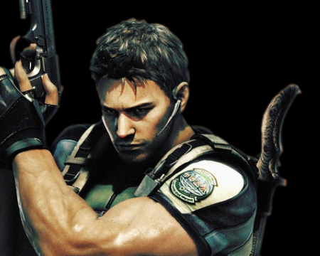

| Home | Characters | Weapons | Games | Chronology |

Jill Valentine
Master of unlocking. Master of survival.
Escaped the Spencer Mansion, Raccoon City, and Nemesis — twice.
The most dangerous woman in a BSAA uniform.
|
☣ Resident Evil
Characters — S.T.A.R.S. & Beyond
|
☣ S.T.A.R.S. Alpha Team
Special Tactics And Rescue Service — Raccoon City Police Department. |
Chris Redfield
S.T.A.R.S. Alpha team marksman and the boulder-punching legend. |
 |
|
|
Jill Valentine
Master of unlocking. Master of survival. |
☣ Umbrella Corporation
Obedience breeds discipline. Discipline breeds unity. Unity breeds power. |
Albert Wesker
Former S.T.A.R.S. captain. Actual traitor. Gifted eugenicist with sunglasses indoors. |

|

|
William Birkin
Brilliant virologist. Devoted father. Catastrophic last decision. |
☣ Survivors & Outcasts
Not agents. Not soldiers. Just people who refused to die. |
Leon S. Kennedy
First day on the job. City in ruins. Kept a perfect hair parting throughout. |

|

|
Claire Redfield
Rode into Raccoon City on a motorbike looking for her brother. |
| ☣ RESIDENT EVIL SERIES ARCHIVE | UMBRELLA CORPORATION IS WATCHING | EST. 1996 |